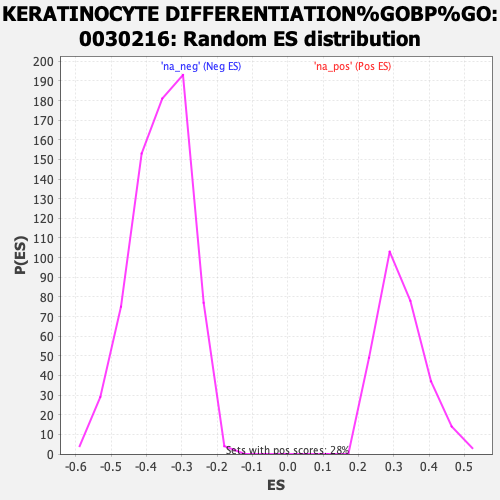

| | | Dataset | ranked_tn_list |
| Phenotype | NoPhenotypeAvailable |
| Upregulated in class | na_pos |
| GeneSet | KERATINOCYTE DIFFERENTIATION%GOBP%GO:0030216 |
| Enrichment Score (ES) | 0.6953632 |
| Normalized Enrichment Score (NES) | 2.1688533 |
| Nominal p-value | 0.0 |
| FDR q-value | 7.665376E-4 |
| FWER p-Value | 0.004 |
Table: GSEA Results Summary
 Fig 1: Enrichment plot: KERATINOCYTE DIFFERENTIATION%GOBP%GO:0030216
Fig 1: Enrichment plot: KERATINOCYTE DIFFERENTIATION%GOBP%GO:0030216
Profile of the Running ES Score & Positions of GeneSet Members on the Rank Ordered List
| SYMBOL | RANK IN GENE LIST | RANK METRIC SCORE | RUNNING ES | CORE ENRICHMENT | | 1 | CDH3 | 38 | 10.841 | 0.1038 | Yes |
| 2 | SCEL | 142 | 8.822 | 0.1841 | Yes |
| 3 | EREG | 191 | 8.104 | 0.2605 | Yes |
| 4 | ANXA1 | 383 | 6.145 | 0.3096 | Yes |
| 5 | POU2F3 | 396 | 6.090 | 0.3684 | Yes |
| 6 | KRT80 | 630 | 4.932 | 0.4032 | Yes |
| 7 | CDSN | 644 | 4.884 | 0.4502 | Yes |
| 8 | IVL | 659 | 4.803 | 0.4963 | Yes |
| 9 | WNT5A | 701 | 4.624 | 0.5391 | Yes |
| 10 | ABCA12 | 879 | 4.030 | 0.5683 | Yes |
| 11 | EPHA2 | 908 | 3.919 | 0.6050 | Yes |
| 12 | KRT6A | 1240 | 3.005 | 0.6152 | Yes |
| 13 | EVPL | 1252 | 2.975 | 0.6437 | Yes |
| 14 | TGM1 | 1367 | 2.770 | 0.6642 | Yes |
| 15 | ST14 | 1392 | 2.726 | 0.6894 | Yes |
| 16 | DSP | 1850 | 1.962 | 0.6822 | Yes |
| 17 | KRT16 | 1935 | 1.843 | 0.6954 | Yes |
| 18 | UGCG | 2455 | 1.353 | 0.6786 | No |
| 19 | CASP3 | 2736 | 1.156 | 0.6737 | No |
| 20 | PPP3CA | 2950 | 1.018 | 0.6713 | No |
| 21 | KRT5 | 3076 | 0.944 | 0.6733 | No |
| 22 | ADAM9 | 3166 | 0.895 | 0.6770 | No |
| 23 | WNT16 | 3216 | 0.872 | 0.6826 | No |
| 24 | EXPH5 | 3422 | 0.765 | 0.6783 | No |
| 25 | KLK5 | 3447 | 0.756 | 0.6843 | No |
| 26 | KRT6B | 3644 | 0.669 | 0.6795 | No |
| 27 | FLG | 3955 | 0.563 | 0.6671 | No |
| 28 | CLIC4 | 4947 | 0.294 | 0.6126 | No |
| 29 | CSTA | 5341 | 0.213 | 0.5920 | No |
| 30 | LIPN | 5359 | 0.208 | 0.5930 | No |
| 31 | MED1 | 5820 | 0.126 | 0.5677 | No |
| 32 | KRT78 | 5935 | 0.109 | 0.5622 | No |
| 33 | OPN3 | 6109 | 0.085 | 0.5530 | No |
| 34 | KRT7 | 6690 | 0.014 | 0.5196 | No |
| 35 | KRT73 | 7287 | -0.050 | 0.4856 | No |
| 36 | JAG1 | 7467 | -0.075 | 0.4760 | No |
| 37 | KRT86 | 8077 | -0.153 | 0.4423 | No |
| 38 | KRT1 | 8257 | -0.177 | 0.4337 | No |
| 39 | KRT2 | 8557 | -0.222 | 0.4186 | No |
| 40 | PIP5K1A | 8882 | -0.276 | 0.4025 | No |
| 41 | KRT72 | 8913 | -0.281 | 0.4035 | No |
| 42 | AKR1C3 | 9541 | -0.385 | 0.3710 | No |
| 43 | CFLAR | 9689 | -0.413 | 0.3666 | No |
| 44 | TXNIP | 11994 | -1.014 | 0.2433 | No |
| 45 | KRT83 | 12139 | -1.068 | 0.2454 | No |
| 46 | BCR | 12343 | -1.137 | 0.2448 | No |
| 47 | ASAH1 | 13926 | -1.956 | 0.1725 | No |
| 48 | KRT10 | 14821 | -2.566 | 0.1459 | No |
Table: GSEA details [plain text format]

Fig 2: KERATINOCYTE DIFFERENTIATION%GOBP%GO:0030216: Random ES distribution
Gene set null distribution of ES for KERATINOCYTE DIFFERENTIATION%GOBP%GO:0030216